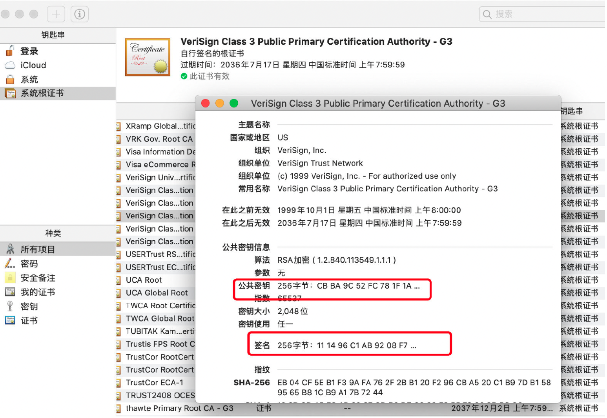

浅析加密、签名和数字证书
浅析加密、数字签名和数字证书
Q:
- 非对称加密中公私钥都可以加密，那么什么时候用公钥”加密”，什么时候用私钥“加密” ？
- 什么是数字签名，数字签名的作用是什么？
- 为什么要对数据的摘要进行签名，而不是直接计算原始数据的数字签名？
- 什么是数字证书，数字证书解决了什么问题？
什么是加密
加密就是对明文数据按某种特殊算法进行处理，使其成为不可读的一段代码，通常称为“密文”。 密文通过”密钥”解密后还原出原来的明文，通过这样的途径可以达到保护数据不被非法人窃取、阅读的目的。
考虑以下哪些属于加密方法：
- AES
- DES
- RSA
- SM4
- SHA
- MD5
- BASE64
这几种都是日常开发中常用的数据编码技术，但是只有 AES、RSA、SM4 才能算是加密算法。
为什么呢？
一个区分的简单方法就是****看编码后的数据是否能还原，能还原的才是加密算法。
MD5 实际上是对数据进行有损压缩，无论数据有多长，1KB、1Mb 还是 1G，都会生成****固定 128 位的散列值（实际开发中会为以32位的十六进制字符串进行显示），并且 MD5 理论上是不可能对编码后的数据进行还原的，即不可逆。MD5 因其具有不可逆性、单向恒定性[幂等性]（相同的数据多次计算值不变）被广泛应用于文件完整性验证、口令加密以及接下来会讲到的数字签名中。
SHA和MD5算法类似，SHA (Security Hash Algorithm) 安全哈希算法也是一种信息摘要生成算法。
使用非对称加密时的签名，使用私钥对摘要进行签名，这个过程称为数字签名 – 数字签名是专门针对使用非对称加密的场景。
如果不使用非对称加密，直接使用MD5和SHA1来实现签名和验签操作也是OK的。
至于 BASE64 是否算做加密方法，仁者见仁。在这里不下结论，因为 BASE64 编码不需要密钥，且编码后的字符串任何人都可以解码出原串，所以一般不认为是加密方法。BASE64 常用来做转码（重编码），如: 把二进制字节序列转化为Base64字符序列。BASE64是一种编码格式。
Base64是网络上最常见的用于传输8Bit字节码的编码方式之一，Base64就是一种基于64个可打印字符来表示二进制数据的方法。可查看RFC2045～RFC2049，上面有MIME的详细规范。Base64要求把每三个8Bit的字节转换为四个6Bit的字节（38 = 46 = 24），然后把6Bit再添两位高位0，组成四个8Bit的字节，也就是说，转换后的字符串理论上将要比原来的长1/3（代码Demo已验证）。
关于这个编码的规则：
- 把3个字节变成4个字节。
- 每76个字符加一个换行符。
- 最后的结束符也要处理。
Base64编码是从二进制到字符的过程，可用于在HTTP环境下传递较长的标识信息。采用Base64编码具有不可读性，需要解码后才能阅读。
加密算法得出的加密字符串使用的是ASCII码字符集，ASCII码字符集有128个字符，其中96个为可见字符，剩下的为不可见字符。所以在使用加密算法进行加密的时候得到的加密字符串中可能会出现不可见的字符，这样会导致调用方无法正确的解析密文。因此在使用加密算法加密数据之后通常都会使用BASE64进行编码，确保密文的组成字符都是可见字符。
BASE64转换表
| 索引 | 对应字符 | 索引 | 对应字符 | 索引 | 对应字符 | 索引 | 对应字符 |
|---|---|---|---|---|---|---|---|
| 0 | A | 17 | R | 34 | i | 51 | z |
| 1 | B | 18 | S | 35 | j | 52 | 0 |
| 2 | C | 19 | T | 36 | k | 53 | 1 |
| 3 | D | 20 | U | 37 | l | 54 | 2 |
| 4 | E | 21 | V | 38 | m | 55 | 3 |
| 5 | F | 22 | W | 39 | n | 56 | 4 |
| 6 | G | 23 | X | 40 | o | 57 | 5 |
| 7 | H | 24 | Y | 41 | p | 58 | 6 |
| 8 | I | 25 | Z | 42 | q | 59 | 7 |
| 9 | J | 26 | a | 43 | r | 60 | 8 |
| 10 | K | 27 | b | 44 | s | 61 | 9 |
| 11 | L | 28 | c | 45 | t | 62 | + |
| 12 | M | 29 | d | 46 | u | 63 | / |
| 13 | N | 30 | e | 47 | v | ||
| 14 | O | 31 | f | 48 | w | ||
| 15 | P | 32 | g | 49 | x | ||
| 16 | Q | 33 | h | 50 | y |
加密算法的分类
加密算法按照加解密使用的密钥是否相同，可分为：
对称加密（Symmetric Cryptography）
- 秘钥相同
- AES，DES
AES和DES算法的主要区别
AES与DES之间的主要区别在于加密过程。在DES中，将明文分为两半，然后再进行进一步处理；而在AES中，整个块不进行除法，整个块一起处理以生成密文。相对而言，AES比DES快得多，与DES相比，AES能够在几秒钟内加密大型文件。
由于DES中使用的共享密钥的比特大小较小，因此它被认为不如AES安全。DES被认为更容易受到暴力攻击，而到目前为止，尚未遇到任何严重攻击的AES。
在灵活性的基础上评估算法的实现，AES比DES更具灵活性，因为它允许包括128、192、256位在内的各种长度的文本，而DES允许对64位固定文本进行加密。
DES回合处理中使用的功能是扩展，置换和替换，具有回合键的XOR操作，而AES回合中使用的功能是子字节，移位行，混合列和添加回合键。AES实际上在硬件和软件实现上都是高效的，而DES最初只在硬件上有效。
DES算法缺点：
分组比较短、密钥太短、密码生命周期短、运算速度较慢。
DES算法优点：
DES算法具有极高安全性，到目前为止，除了用穷举搜索法对DES算法进行攻击外，还没有发现更有效的办法。
AES算法缺点：
目前尚未存在对AES 算法完整版的成功攻击，但已经提出对其简化算法的攻击。
AES算法优点：
1、运算速度快，对内存的需求非常低，适合于受限环境。
2、分组长度和密钥长度设计灵活， AES标准支持可变分组长度，分组长度可设定为32比特的任意倍数，最小值为128比特，最大值为256比特。
3、 AES的密钥长度比DES大，它也可设定为32比特的任意倍数，最小值为128比特，最大值为256比特，所以用穷举法是不可能破解的。
4、具有很好的抵抗差分密码分析及线性密码分析的能力。
总而言之，AES和DES算法之间的区别就是加密过程，这两种算法都有自己的优缺点，相对来说，AES比DES安全性高，运算速度快。
非对称加密（Asymmetric Cryptography）
- 秘钥不同
- RSA
对称加密
对称加密是指加密和解密时使用同一个密钥。
非对称加密
非对称加密是指加密和解密使用不同的密钥，这两个密钥分别叫做「公钥」、「私钥」。
公钥是可以公开给所有人的，而私钥需要自己保密的。公钥加密的数据只能用私钥解密。
同理，私钥“加密”的数据只能用公钥“解密”：
大家注意到没， 私钥“加密” 这里打了引号，为什么呢？
因为私钥不是用来加密的，准确的说法应该是 「私钥签名，公钥验签」。
这个问题很多同学都存在误解，认为公私钥都可以用于加密。实际上不是的，至于为什么，后面会解释的。
这么看来，非对称加密的公私钥就有两种玩法了，如下两种场景:
- 加密场景
- 公钥加密 –> 私钥解密
- 数字签名场景
- 私钥签名（也就是加密操作，只是称呼不一样） –> 公钥验签（也就是解密操作，称呼不一样）
接下来引入一个小故事继续后续内容。
故事开始
第一回合
Bob 想约 Alice 出来玩，于是给 Alice 发了一封邮件：
但我们都知道网络是不可信的，并且由于消息在网络中是明文传输的，所以黑客可以轻易的截获、篡改甚至冒充 Bob。来，我们看看黑客 Eve 是怎么干的：
瞧，Eve 轻易的拿到了邮件内容 （窃听），并且修改了邮件内容 （篡改），甚至说他可以随时冒充 Bob 给 Alice 发送邮件 （伪装）。如果上图中 Eve 伪造的内容被 Alice 接收到了，那么后果可想而知。现实世界中，我们每天都在通过网络进行聊天、转账、浏览不存在网站。如果都是这样明文传输数据，显然毫无安全感。
第二回合
既然我们不能明文传输，那么 Bob 和 Alice 提前商量好密钥，使用对称加密对邮件内容加密不就好了~
现在 Bob 发送的邮件都使用和 Alice 提前商量好的密钥加密后再传输。由于没有密钥，Eve 就算截获到数据也无法获取邮件的内容，也没法篡改和冒充 Bob。因为篡改后的数据必须使用密钥再次加密 Alice 才能正确解密。那么只要 Bob 和 Alice 能够保证密钥不泄露，整个通信就是安全的。如果密钥泄露，被中间人截获，那么就等同于明文通信。所以我们不能把安全性寄托在人上面[这也是开发中需要规避的问题，相当于不要依赖调用方的入参不发生错误]。并且这里也存在一个问题，如果两个人不能线下见面， 如何在网上安全的交换密钥呢？
这似乎是无解的，因为交换密钥的时候我们必须明文通信，不然对方根本看不懂。但是明文交换即意味着可能泄露。但是别忘了我们的密码学工具箱里还有一个好东西 — 「非对称加密」。
Bob 和 Alice 各自生成一对公私钥，因为公钥本来就是公开的，可以被任何人获取，所以可以通过网络明文交换公钥。然后使用公钥加密邮件内容后发送给对方，接收者使用自己的私钥即可解密。完美~
第三回合
来看看，在非对称加密体系下，Bob 如何给 Alice 发消息的。
首先 Alice 需要先生成一对公私钥，私钥只能 Alice 自己知道，公钥是可以让任何人都知道的，因此可将公钥直接发送给 Bob，就算被截获也无所谓。
Bob 使用 Alice 的公钥加密邮件内容，加密后的内容只能由 Alice 的私钥解密，所以就算 Eve 截获也是徒劳。反之，如果 Alice 想给 Bob 回信，就需要用 Bob 的公钥加密后发送。这就解决了密钥交换问题，也保证了邮件内容不会泄露。也就是说现在可以防窃听。
如何证明 Bob 是 Bob
不知道你注意到没有，这里也存在另外一个问题：Eve 也可以使用 Alice 的公钥冒充 Bob 给 Alice 发邮件啊，因为 Alice 的公钥本来就是公开的，任何人都可以获得。由于 Eve 也可以获得 Alice 公钥，所以没法防止 Eve 伪装和篡改，并且对于 Alice 而言，她无法分辨出邮件到底是 Eve 发的还是 Bob。所以这个问题的本质就是 「Alice 如何确认邮件来自于 Bob」。
那么在生活中，我们如何做这件事呢？
那就是让 Bob 在纸上签名并且按手印，因为指纹和字迹是 Bob 独有的，其它人很难伪造。所以我们需要在计算机中引入类似的机制：即只有 Bob 自己能够产生的独一无二的标志，并且其它人能够验证这个标志确实是属于 Bob的。
这就是我们今天要讲的主题—「数字签名」。
还记得什么是 Bob 独有的吗？
对，就是 Bob 自己的私钥，Bob 用自己的私钥对邮件内容计算一个「签名」，将「签名」和邮件内容一起发送出去，接受者 Alice 可以使用 Bob 的公钥验证这个签名是否正确，这就叫「验签」。如果不是 Bob 的私钥计算的签名，那么 Alice 用 Bob 公钥验签将会出错。
可以看到， Eve 试图使用自己的私钥计算签名然后发送给 Alice， 但是 Alice 使用 Bob的公钥进行验签时将会出错！
那么 Eve 可能篡改内容并冒充 Bob 的签名吗？不可能！因为内容发生改变时，对应的签名也需要重新计算，而签名的生成依赖于私钥，只要 Bob 的私钥不泄露，签名就不会被冒充。啊啥？你说万一私钥泄露了怎么办？那就当我没说…
所以使用数字签名，我们能够鉴别消息的发送者，也就是说黑客无法伪装发送者进行发送数据，也无法篡改。
注意：
可以看出我们这里数据是明文传输的，存在窃听风险。这是我们为了阐述数字签名机制是如何运转的，故意将保证信息机密性的机制省略了。如果想要保证数据的机密性，我们常见的做法是，通信双方通过非对称加密安全交换对称加密的密钥，后续通信过程的数据都使用对称加密保证数据机密性。并且「签名」的作用本身也不是用来保证数据的机密性，而是用于验证数据来源的防止数据被篡改的，也就是确认发送者的身份。
一般而言，我们不会直接对数据本身直接计算数字签名，为什么呢？
因为数字签名属于非对称加密，非对称加密依赖于复杂的数学运算，包括大数乘法、大数模等等，耗时比较久。如果数据量大的时候计算数字签名将会比较耗时，所以一般做法是先将原数据进行 Hash 运算，得到的 Hash 值就叫做「摘要」。
「摘要」就像人的指纹一样，可以代表一个人，只要内容发生了改变，计算出来的摘要也应该变化。
「摘要」最好是不可逆转的，一般使用开头提到的 MD5 作为 Hash 函数，MD5 输出的结果固定位 128 位。
为什么「摘要」最好是不可逆转的？
因为既然 Alice 可以用 Bob 公钥解开签名，那么理论上其它人，比如 Eve 也可以使用 Bob 公钥解开签名拿到数据。所以我们最好对数据的「摘要」进行签名，这样，Eve 就算解开签名，拿到的也是「摘要」，如果摘要是不可逆转的，也就是无法从摘要反推出原文，也就达到了保密的作用。
发送者使用私钥对「摘要」计算数字签名。那么接收者如何验证呢？
- 接受者 Alice 收到后，取下数字签名，同时用 Bob 的公钥解密，得到「摘要1」，证明确实是 Bob 发的。*( 画外音：如果使用 Bob 的公钥验证签名出错，那么签名一定不是 Bob 的私钥生成的）*
- 再对邮件内容使用相同的散列函数计算「摘要2」，与上面得到的「摘要1」进行对比，两者一致就说明信息未被篡改。这样两步分别证明发送者身份和保证数据未被篡改。
这就够了吗？
Bob 和 Alice 现在可以依赖于对称加密进行保密通信，也可以依赖于数字签名验证消息是否是对方发送的。但是这一切的根基是建立在 Alice 持有的公钥确实是 Bob的，反之亦然。
什么意思呢？
试想，Eve 如果将自己的公钥冒充 Bob 发送给 Alice，然后 Alice 保存了下来，那以后凡是 Bob 发送的消息，反而会验证签名失败，被当做冒充者。那你可能会问，为什么 Eve 可以将自己的公钥发送给 Alice，而 Alice 毫不知情呢？
看！我们又回到了最初的起点，只不过这次被篡改的是公钥，之前是消息本身。因为 Bob 的公钥是直接通过网络发送给 Alice的，所以 Eve 才可以在这一步做手脚，进行篡改，将自己的公钥冒充 Bob 发送给 Alice，也就是发送公钥这一步没有做到：
- 防篡改
- 防冒充
防篡改怎么和防冒充怎么实现的呢？我们前面讲了，就是靠数字签名！ 但是数字签名需要接受者持有发送者公钥，才能进行验签。而我们现在处理的是分发公钥这一步，所以…死锁了。这像是先有鸡还是先有蛋的问题。
现在的问题就是「Bob 无法证明它自己是 Bob」。
这个是不是似曾相识，以前去办事的时候经常被要求出具「我妈是我妈」这类证明。但是我们自己说“我妈就是我妈”，人家根本不会信呀，需要一个可信第三方出具证明，比如派出所。
那么「Alice 如何才能确认 Bob 发送给自己的公钥确实是 Bob 的，而没有被篡改？」在只有 Alice 和 Bob 两人的情况下是没法验证的。所以，我们这里也需要一个第三方帮 Bob证明 「Bob 的公钥就是 Bob 的公钥」，有点绕口令那感觉了~
数字证书
为了解决这个问题，就引入了「数字证书」，什么叫数字证书呢？
百度百科：
数字证书是指在互联网通讯中标志通讯各方身份信息的一个数字认证，人们可以在网上用它来识别对方的身份。
因此数字证书又称为数字标识。数字证书对网络用户在交流中的信息和数据等以加密或解密的形式保证了信息和数据的完整性和安全性。
看了这个描述，是不是感觉还是云里雾里，还是我用大白话来说吧~
只要你理解了前面的数字签名，就能理解这里的数字证书，因为我把数字证书叫做「公钥的数字签名」。
为什么呢？我们引入数字证书的目的是为了保证公钥不被篡改，即使被篡改了也能识别出来。
而防篡改的方法就是数字签名，但是这个签名不能我们自己做，原因说过了，因为我们的公钥还没分发出去，别人无法验证。所以只能找可信的第三方来帮我们签名，即证书颁布机构（CA），CA 会将：证书的颁布机构、有效期、公钥、持有者(subject)等信息用 CA 的私钥进行签名。并且将签名结果和这些信息放在一起，这就叫做「数字证书」。
这样，Bob 就可以去 CA 申请一个证书，然后将自己的证书发给 Alice，那么 Alice 如何验证这个证书确实是 Bob的呢？
当然是使用 CA 的公钥进行验签。
注意：
CA 的公钥也是需要使用证书来分发的，所以 Alice 的电脑必须安装 CA 的证书，证书里包含了 CA 的公钥。
收到 Bob 发过来的数字证书后，Alice 使用 CA 的公钥进行验证，验证通过即证明这确实是 Bob 证书，也就可以使用证书中包含的 Bob 的公钥，按照之前讨论的流程进行通信。
那么 Eve 是否可以在中途篡改 Bob 的证书呢？
答案：不行，因为证书的信息使用 CA 的私钥进行签名，只要 Eve 修改了任何一个 Bit 都会导致最后签名验证不通过。
那 Eve 可不可以修改证书信息后自己重新计算一次证书的数字签名呢？
也不行，因为证书的数字签名计算依赖于 CA 的私钥，Eve 是拿不到 CA 的私钥的。
如果拿到了，说明什么？整个世界都是不可信的。
数字证书长啥样
这是我电脑中的自带的证书：
可以看到，包含了证书持有人的公钥和证书的签名。另外，证书颁发机构是有层级关系的，下级 CA 的证书是需要由上级 CA 签名的。
换句话说一定存在根证书颁发机构，那么他们的证书是由谁签名的呢？
答案是自签，自己给自己认证。
这是我电脑中的一个自签的根证书颁发机构：
为什么根证书可以自签，谁来保证安全？
你把钱存在银行，你会担心吗？我们基于对国家的信任，才信任银行，这就是信任链的基础！我们思考问题应该是分层的，如果不认可一个统一的基础，一直套娃下去，那么问题就无解。
那还有个问题，如何保证根证书的可靠性？
这是操作系统和浏览器预装的，由微软、苹果等操作系统厂商来选择根证书。
证书不可信？
那么什么情况下浏览器会提示 “证书不可信” 呢？
根据我们上面的分析，下面是可能的原因：
- 证书不是权威 CA 颁发
有些企业为了贪图便宜使用盗版的证书，没有经过 CA 认证。也就是无法使用浏览器内置 CA 公钥进行验证。
- 证书过期
上面说了，证书里有一项就是有效期，一般就是一年或者两年的时间。如果证书过期，那么浏览器就会提示“证书不可信”
- 证书部署错误
可能是服务器证书部署出错，比如证书与域名不匹配，因为证书里有一项是持有人信息的。
好了，饶了一大圈，Bob 终于可以安全的向 Alice 发出前往红树林的邀请了~
QA
现在我们来回答文章开头提出的一些问题：
非对称加密中公私钥都可以加密，那么什么时候用公钥加密，什么时候用私钥“加密” ？
- 加密场景，那么肯定希望只有我才能解密，别人只能加密。即公钥加密，私钥解密。
- 签名场景，既然是签名，就希望只能我才能签名，别人只能验证。即私钥签名，公钥验签
什么是数字签名，数字签名的作用是什么？
- 数字签名就是使用私钥对数据摘要进行签名，并附带和数据一起发送。
- 可以起到防篡改、防伪装、防否认的作用。
为什么要对数据的摘要进行签名，而不是直接计算原始数据的数字签名？
- 数据可能比较大，签名是使用非对称加密算法，比较耗时。
- 防止第三方使用公钥解开签名后，拿到原始数据。
什么是数字证书，数字证书存在解决了什么问题？
- 数字证书就是由 CA 机构使用自己私钥，对证书申请者的公钥进行签名认证。
- 数字证书解决了如何安全分发公钥的问题，也奠定了信任链的基础。
参考:
 微信
微信